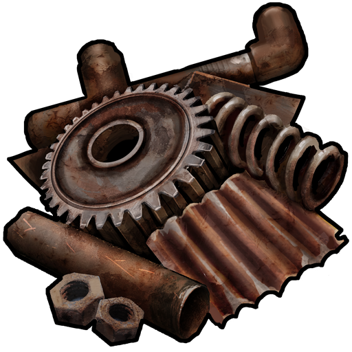

<html>
 <head>

  <title>Металоприем</title>
  <style>
   h1 
  {font-family: fantasy
  }
   body {
    background: url(Фонмет.jpg) no-repeat;
    background-size: 100%;
   }
  </style>
  <html>
<head>
<title>Время.</title>
<script language="JavaScript">
<!-- 
ndata = new Date();
hours = ndata.getHours();
mins = ndata.getMinutes();
secs = ndata.getSeconds();
if (hours < 10) {hours = "0" + hours }
if (mins < 10) {mins = "0" + mins }
if (secs < 10) {secs = "0" + secs }
datastr = ( hours + ":" + mins + ":"+secs )
-->
</script>
</head>
<body>
<font face="Arial" size="10" color="#b00000">
<script language="JavaScript">
<!--
document.write(datastr);
-->
</script> 
</font>
</body>
</html>
 </head>
 <link rel = "stylesheet" href = "style.css">
 <body text=#ffffff>
 <center> <div></div> </center>

 <h1> <center>
 <font 
    size=14 > <b>  Металоприем </b> </font>
 </center> </h1>
 <div class="widget">
 <table>
 <tr>
  <h3 class="widget-title" >Меню</h3>
  <ul class="widget-list">
    <li><a href="мета.html">Главная</a></li>
    <li><a href="page2.html">Прайс</a></li>
    <li><a href="page3.html">Контакты</a></li>
    <li><a href="page4.html">О нас</a></li>
	
  </ul>
  </tr>
</div>
<center><div><font 
    size=14 color=black <b>  Предоставляемые услуги </b> </font>
	<br/>
	<font color=black>

Компания закупает дорого всю линейку вторсырья, в том числе:

лом цветных и черных металлов;
сложный лом в разделке;
кабеля в пластиковой, бронированной оболочке;
АКБ;
электролом;
платы;
электронную и бытовую технику;
пластик и макулатуру.
Для сдатчиков металлолома приемный пункт всегда расположен в удобном для подъезда месте. Здесь же можно сдать аккумуляторы, вышедшие из строя, и автомобиль на разборку.
</font>
 <center> <div></div> </center>
<center><div><font 
    size=14 color=black <b>  Особенности скупки металлолома </b> </font>
	<br/>

<font color=black>
Чтобы ответить на вопрос сколько стоит кг. черного лома, надо учесть всю геоэкономическую политику на данный момент. Компания "Ферратек" и партнёры всегда предлагают максимальную стоимость на любой вид вторсырья. Для того чтобы осуществить  прием меди, надо провести огромную подготовительную работу. Сюда включаются следующие мероприятия:

Финансовое обеспечение;
Организация подъездных путей;
Складские помещения с весовой;
Профессиональные сотрудники;
Собственная лаборатория;
Вывоз автотранспортом компании.<b></div> </center></font>


 <p align="right"><a href="https://my.mail.ru/mail/andrey-vasilev-99/">metal@mail.ru</a></p>

 